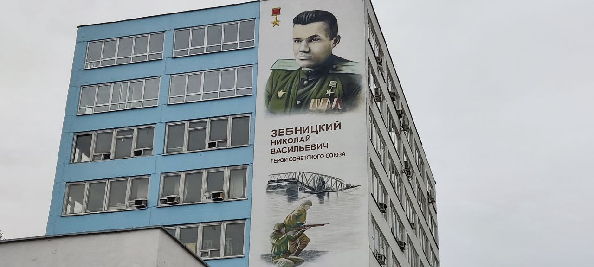
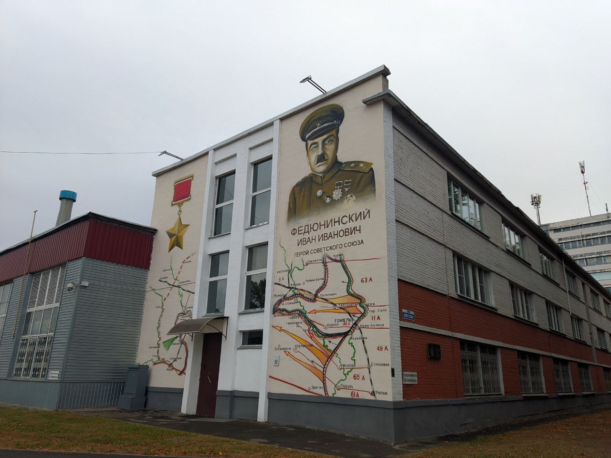
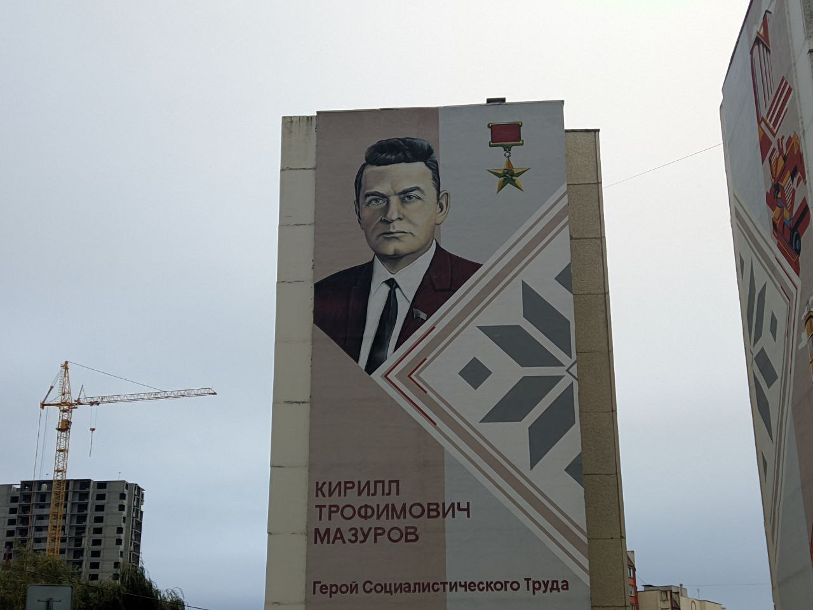
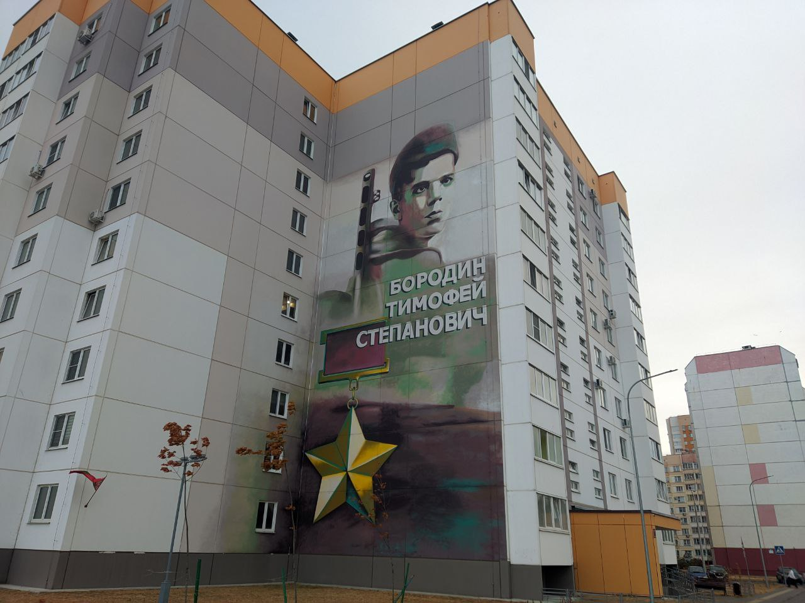
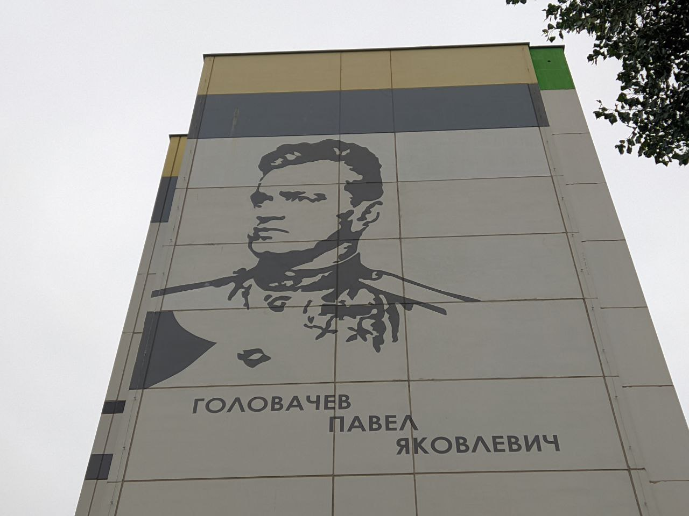
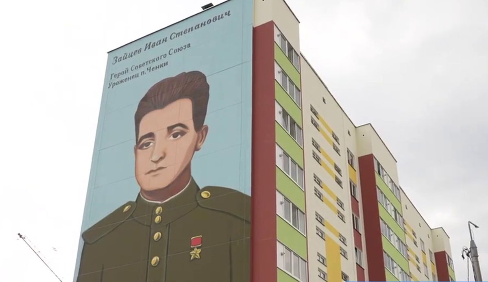
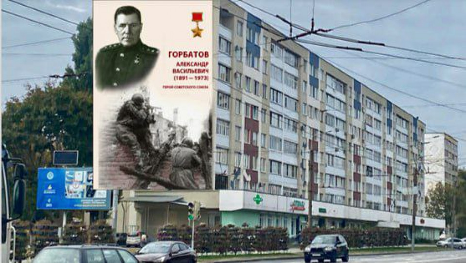
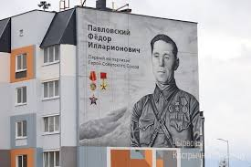
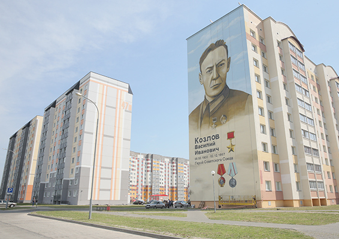
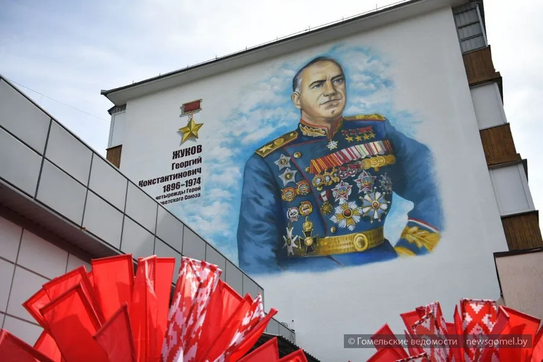

×

Мурал — это не просто большое изображение, нарисованное на стене, это оригинальный способ отдать дань памяти защитникам Родины, великим героям Красной армии, которые во время Великой Отечественной войны освободили нашу страну. В самом Гомеле насчитывается более 10 муралов, посвященных героям Великой Отечественной войны и значимым личностям.
| Фото места | Адрес | Описание |
|---|---|---|
 |
Изображение Емельяна Барыкина на ул.Барыкина, 94, г. Гомель | В преддверии 75-й годовщины победы в Великой Отечественной на доме № 94 по улице Барыкина был создан мурал с изображением Емельяна Игнатьевича. |
 |
Изображение Константина Рокоссовского на ул.Ильича, 106, г. Гомель | В Гомеле появился 30-метровый мурал Константина Рокоссовского – легендарного полководца, дважды Героя Советского Союза. |
|  | Изображение Николая Зебницкого на ул.Советской, 145, г. Гомель | В преддверии 80-летия освобождения Гомеля от немецко-фашистских захватчиков был открыт мурал в честь Героя Советского Союза Николая Васильевича Зебницкого. |
|  | Изображение Ивана Федюнинского на ул.Советской, 157/2, г. Гомель | В преддверии 80-летия освобождения Гомеля от немецко-фашистских захватчиков в городе появился новый мурал в честь генерала армии Героя Советского Союза почетного гражданина Гомеля Ивана Ивановича Федюнинского. |
|  | Изображение Кирилла Мазурова на ул.Мазурова, 4к/2, г. Гомель | Ко 800 летию города торцы двух домов на улице Мазурова украсило очередное граффити с изображением знаковой для Гомеля личности. Мурал посвящен советскому партийному деятелю Кириллу Мазурову. |
 |
Изображение Илья Кожара на ул.Кожара, 2, г. Гомель | В августе исполняется 120 лет со дня рождения Ильи Кожара, а в марте 105 лет отметила газета "Гомельская праўда". Поэтому закономерно, что именно по инициативе редакции областной газеты, которая также выступила меценатом проекта, фасад дома по улице, названной в честь Героя, украсил мурал нашему известному земляку. |
|  | Изображение Тимофея Бородина на ул.Т.С.Бородина, 10А, г. Гомель | Новый мурал появился на одном из домов в Гомеле. Посвящён он Герою Советского Союза Тимофею Бородину. Граффити с изображением известного гомельского подпольщика находится на новостройке, выросшей на одноимённой улице в микрорайоне «Мельников Луг». |
|  | Изображение Павла Головачева на ул.Головачева, 2, г. Гомель | В 2021 к Дню Военно-воздушных сил на фасаде одного из зданий открыли новый мурал великому летчику Советского Союза Павлу Головачеву. |
 |
Изображение Бориса Царикова на ул.Царикова, 3, г. Гомель | К Дню Независимости Республики Беларусь в Гомеле появился новый мурал посвященный Пионеру-Герою Советского Союза Борису Царикову. |
 |
Изображение Галины Докутович на ул.Красной, 1, г. Гомель | К Дню Независимости Республики Беларусь в Гомеле появился новый мурал посвященный легендарной летчице Советского Союза, уроженеке г. Гомеля, Галине Докутович. |
|  | Изображение Ивана Зайцева на ул.Октябрьская, 7, п. Ченки | В поселке под Гомелем появился мурал в честь Героя Советского Союза Ивана Зайцева в доме на той улице, где он родился. |
 |
Изображение Андрею Корзуну на ул.Корзуна, 45, г. Наровля | В Наровле появился мурал, посвященный герою Великой Отечественной войны, уроженцу Наровлянщины, Андрею Корзуну. |
|  | Изображение Александра Горбатова по пр-ту Космонавтов, 32, г. Гомель | В преддверии празднования 81-й годовщины освобождения Гомеля от немецко-фашистских захватчиков поступило предложение о создании мурала в честь Героя Советского Союза Александра Горбатова. |
|  | Изображение Федора Павловского на ул. Бумажкова, 6, п.г.т. Октябрьский | В поселке городского типа Октябрьский появился новый мурал, посвященный уроженцу поселка, Федору Павловскому. |
 |
Изображение Тихона Бумажкова на ул. Бумажкова, 4, п.г.т. Октябрьский | В поселке городского типа Октябрьский появился новый мурал, посвященный уроженцу поселка, Тихону Бумажкову. |
|  | Изображение Василия Козлова на ул. Козлова, 29, г. Жлобин | В городе Жлобине в преддверии празднования 80-й годовщины освобождения Беларуси от немецко-фашистких захватчиков появился новый мурал, посвященный Василию Козлову. |
 |
Изображение Леонида Петровского на ул. Петровского, 31, г. Жлобин | В предверии празднования 80-той годовщины особождения Беларуси от немецко-фашистких захватчиков, в Жлобине открыли новый мурал в честь Леонида Петровского. |
 |
Изображение Николая Михайлашева на ул. Советсквя 2, г. Добруш | В городе Добруше был открыт мурал легендарному герою Николаю Михайлашеву, в предверии празднования 81-й годовщины освобождения Беларуси. |
|  | Изображение Георгия Жукова на ул. Жукова, 2, г. Гомель | В преддверии празднования 80-летия Победы поступило предложение о создании мурала в честь Героя Советского Союза Георгия Жукова. |
 |
Изображение Григория Денисенко на ул. Григория Денисенко, 82, г. Гомель | В городе Гомеле недавно был открыт мурал легендарному герою Григорию Денисенко, в предверии празднования 80-й годовщины Победы. |
 |
Изображение Ильи Катунина на ул. Катунина, 2, г. Гомель | В преддверии празднования 80-летия Победы поступило предложение о создании мурала в честь Героя Советского Союза Ильи Катунина. |